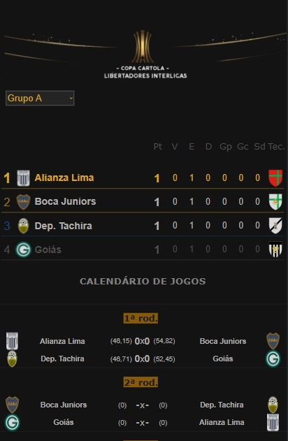

Campeonato de Cartola
A vitória no cartola é o sucesso do seu time!


Com uma das menores média de pontos de toda a temporada, rodada de estréia das Copas interligas (Libertadores e Sulamericana) foram marcadas por poucas vitórias, todas graças ao critério da “regra baixa”, ao qual constitui um das bases que compõem o conjunto de parâmetros na contabilização de gols, ao qual daremos abaixo uma breve explicação, especialmente para os não pertencentes ao quadro de federados da “CDC” (Liga de Campeonato de Clube de Cartola) na condição de estreantes.
Oito clubes arrancaram com vitória na Copa Libertadores, assinalando os primeiros líderes isolados de grupo, a exceção do The Strongest, do “Junasso 13”, e do Olímpia, do cartoleiro “UGAO F.C”, ambos do grupo “E” e federados na liga paulistana estreante da “Decreto e Danone”, ao vencerem, respectivamente, Vasco da Gama (Rio Claro/RJ) e Newell’s (Liga da Guarda/RS).
Dentre os técnicos em busca do bicampeonato, o único que arrancou com derrota foi o “Catheringer FC (Campeão de 2022), treinando o Flamengo no grupo “E”, ao perder para o Atlético Nacional do “mas q bons f.c”, representante da Liga da Guarda/RS. 
Grupo "A", do atual campeão Deportivo Tachira, foi o único em que os jogos de estréia encerram em zero a zero.